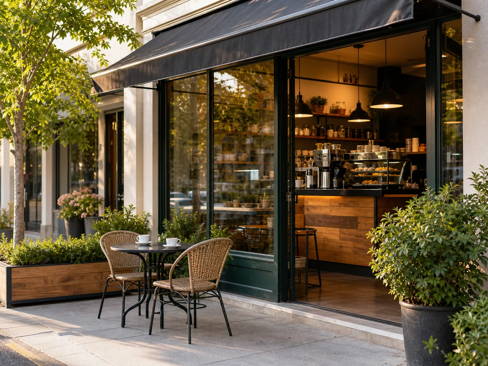
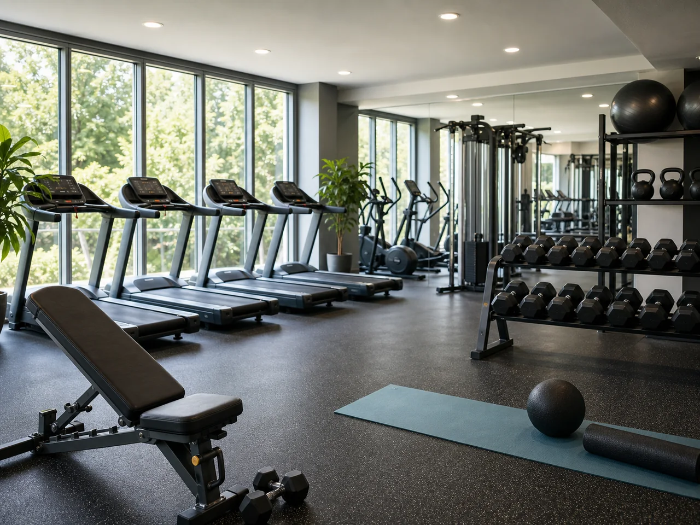
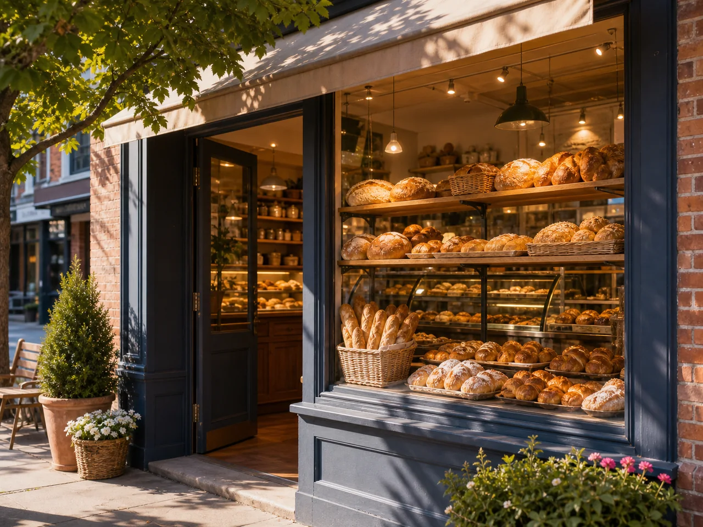
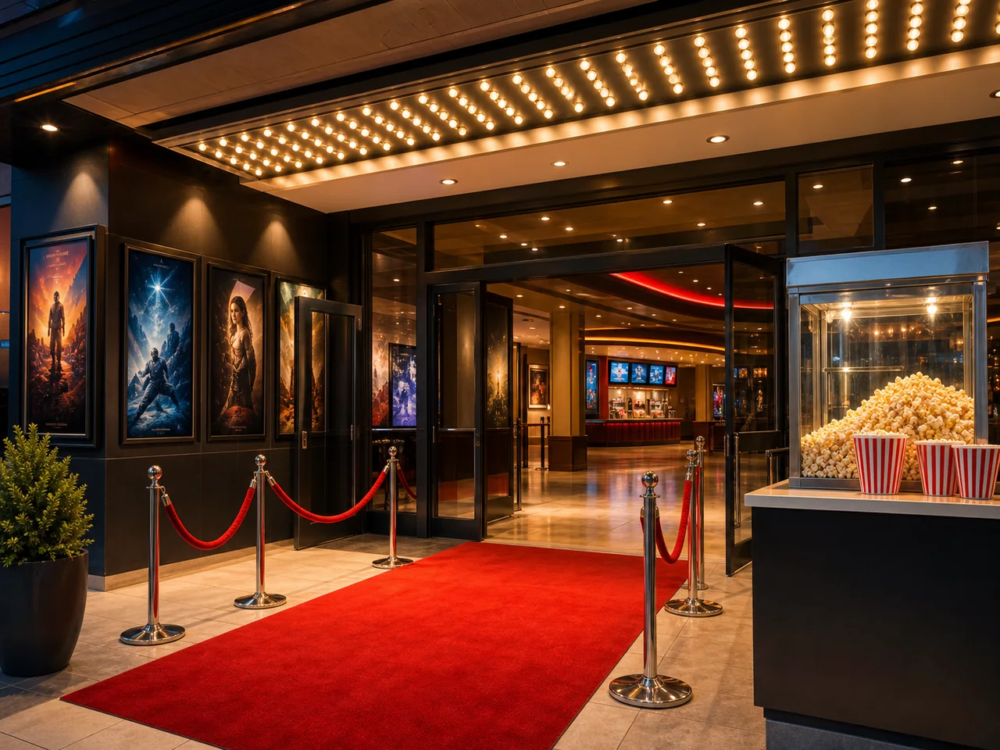

By the end of this unit, you will be able to describe places in a neighborhood, ask for and give simple directions, tell the time, and present your favorite place in the city.
01
Learning route
What you will learn in Unit 6
Unit 6 connects places, routines, time, and city recommendations. You will move from simple vocabulary to a complete spoken and written city guide.
This unit prepares you to describe your neighborhood and help someone move through a simple city map.
Audio 1
Unit 6 overview
Listen to the complete goal of the unit before studying the sections.
FirstLearn the names of places in a neighborhood: park, library, bank, supermarket, hospital, and bus stop.
ThenUse there is and there are to describe what places exist.
FinallyGive directions, say times, and recommend a favorite place in the city.
Teacher source check: this section follows the Basic Course 1 pacing guide for Sessions 15 and 16: neighborhoods, nice places, time, favorite places in the city, sound practice, and city map presentation.
02
Places in Town
Study the basic places first. The extra places connect this lesson with the Unit 6 memory game.
parkThere is a park.

cafeThere is a cafe.
restaurantThere is a restaurant.
schoolThere is a school.
libraryThere is a library.

gymThere is a gym.
supermarketThere is a supermarket.
hospitalThere is a hospital.
bankThere is a bank.
churchThere is a church.
bus stopThere is a bus stop.
pharmacyThere is a pharmacy.

bakeryThere is a bakery near the cafe.

movie theaterThere is a movie theater downtown.
shopping mallThere is a shopping mall in the city.
police stationThere is a police station near the bank.
03
There is / There are
Use this structure to say that one place or many places exist in a neighborhood.
Use
Affirmative
Negative
Question
Short answer
One place
There is a park.
There isn't a park.
Is there a park?
Yes, there is. / No, there isn't.
Many places
There are two cafes.
There aren't two cafes.
Are there two cafes?
Yes, there are. / No, there aren't.
A lot
There are many restaurants.
There aren't many restaurants.
Are there many restaurants?
Yes, there are. / No, there aren't.
SingularThere is a library near my house.
PluralThere are three supermarkets downtown.
QuestionIs there a bank near here?
Common mistake 1Incorrect: There are a park. Correct: There is a park.
Common mistake 2Incorrect: There is two cafes. Correct: There are two cafes.
04
Location Words and Giving Directions
These two skills go together: first say where a place is, then explain how to get there from a starting point.
Pedagogical ideaLocation answers “Where is it?” Example: The library is across from the park. Directions answer “How can I get there?” Example: Go straight for two blocks and turn right at the cafe.
nearcerca deThere is a pharmacy near my house.
next toal lado de / junto aThe library is next to the supermarket.
in front ofen frente de / delante deThere is a bus stop in front of the school.
across fromal frente de / cruzando la calleThe library is across from the park.
behinddetrás deThe cafe is behind the bank.
betweenentreThe cafe is between the bank and the pharmacy.
on the corneren la esquinaThe restaurant is on the corner.
downtownen el centro de la ciudadThere are many restaurants downtown.
parkcafebanksupermarkethospitalbus stop
Look at the professional map: first describe locations, then give directions from the bus stop to another place.
1Start pointStart at the bus stop. / Start at the park.
2MovementGo straight. / Walk down Main Street. / Cross the street.
3Reference pointTurn right at the cafe. / Go past the supermarket.
4Final locationThe bank is on your left. / It is across from the park.
Function
English
Spanish meaning
Example
Ask
Excuse me, where is...?
Disculpa, ¿dónde está...?
Excuse me, where is the library?
Ask
How can I get to...?
¿Cómo puedo llegar a...?
How can I get to the supermarket?
Move
Go straight
Sigue derecho
Go straight for two blocks.
Turn
Turn left / right
Gira a la izquierda / derecha
Turn right at the cafe.
Continue
Go past...
Pasa por / sigue pasando...
Go past the supermarket.
Cross
Cross the street
Cruza la calle
Cross the street and turn left.
Finish
It is on your left / right
Está a tu izquierda / derecha
The bank is on your left.
Very basic
Go straight. Turn right. The bank is on your left.
Better
Go straight for two blocks. Turn right at the supermarket. The bank is on your left.
Complete
Start at the bus stop. Go straight for two blocks, turn right at the supermarket, and walk past the cafe. The bank is on your left, across from the park.
Audio 2
Finding the library
Listen to a model conversation with directions, location words, time, and one idiom.
Conversation script
Ana: Excuse me, where is the library?
Daniel: It is near the park. Go straight for two blocks and turn right at the cafe.
Ana: Is it next to the supermarket?
Daniel: Yes, it is. It is across from the park.
Ana: What time does it open?
Daniel: It opens at eight o'clock.
Ana: Great. Is there a bus stop near the library?
Daniel: Yes, there is. It is just around the corner.
Common mistake 1Incorrect: Turn right in the cafe. Correct: Turn right at the cafe.
Common mistake 2Incorrect: The bank is in your left. Correct: The bank is on your left.
05
What Time Is It?
Use time to talk about opening hours, meeting points, routines, and city activities.
Current timeWhat time is it? It is seven o'clock. It is seven thirty.
Opening timesWhat time does the cafe open? It opens at 8:00 a.m.
Activity timesI go to the park at 5:00 p.m. Let's meet at the bus stop at 7:15.
It is + time.opens at + time.go there at + time.meet at + time.
Common mistakeIncorrect: I go there in 5:00. Correct: I go there at 5:00.
Third personIncorrect: The library open at 8:00. Correct: The library opens at 8:00.
06
Favorite Places in the City
Recommend a place by saying where it is, what it is like, what people do there, and why you like it.
Step 1My favorite place is the library.
Step 2It is next to the supermarket.
Step 3It is quiet and modern.
Step 4I recommend it because it is calm and friendly.
quietThe library is quiet.
popularThe restaurant is popular.
safeThe park is safe.
beautifulThe city center is beautiful.
modernThe shopping mall is modern.
cleanThe bus stop is clean.
friendlyThe cafe is friendly.
amazingThere are amazing places downtown.
07
Phrasal Verbs and Useful City Expressions
Learn natural expressions for asking directions, moving around the city, and talking about favorite places.
Audio 3
City expressions
Listen and repeat the direction phrases and city expressions.
get tollegar aHow can I get to the library?
go straightseguir derechoGo straight for two blocks.
turn left / rightgirar a la izquierda / derechaTurn right at the cafe.
go pastpasar por / seguir más allá deGo past the supermarket.
walk downcaminar por / bajar por una calleWalk down Main Street.
stop bypasar por un lugar brevementeI stop by the cafe after class.
check outvisitar / mirar / conocerCheck out the new restaurant downtown.
meet upreunirse / encontrarseLet's meet up at the bus stop.
on your left / righta tu izquierda / derechaThe library is on your left.
08
Idioms for Places and Directions
Use a small number of natural idioms. They also appear in the general Basic English idiom bank.
Audio 4
Unit 6 idioms
Listen to the idioms, meanings, and examples.
just around the cornermuy cerca / a la vuelta de la esquinaVery near. The cafe is just around the corner.
hit the roadsalir / arrancar caminoLeave or start a trip. It is late. Let's hit the road.
in the middle of nowhereen medio de la nadaVery far from places. The hotel is in the middle of nowhere.
a stone's throw awaymuy cercaVery near. The library is a stone's throw away from the park.
Important: idioms are not translated word by word. Students first learn the meaning, then repeat the example, and finally create a personal sentence.
09
Main Models and Final Products
The final models integrate places, there is / there are, directions, times, adjectives, expressions, and one idiom.
Audio 5
Final speaking model
Listen to a complete A1 model before preparing your own city guide.
Final speaking model: My favorite place in the city
My favorite place in my city is the library. There is a park across from it, and there are two cafes near it. To get there, go straight and turn right at the supermarket. The library is on your left. It opens at eight o'clock. I go there at four p.m. after class. It is quiet, clean, and modern. The cafe is just around the corner, so I sometimes stop by after studying.
Final writing model: Short city guide
Welcome to my neighborhood. It is small, clean, and friendly. There is a park near my house, and there are two restaurants downtown. My favorite place is the library because it is quiet. To get there, go straight for two blocks and turn left at the bank. The library is across from the park. It opens at eight in the morning. I recommend it because students can study there after class.
10
Practice Connection
Move from explanation to practice
After studying the explanation, students can complete the Unit 6 speaking workshops, directions roulette, memory game, reading, listening, and pronunciation practice.